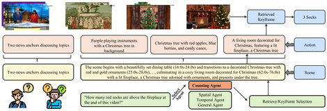

Jingcheng Li
PhD Student, University of Utah
I am an incoming PhD student at the Kahlert School of Computing, University of Utah, advised by Ziad Al-Halah. My research focuses on multimodal learning — building AI systems that can understand and generate across modalities such as vision, audio, and language.
Previously, I received my master's degree at UC San Diego, where I worked with Professor Zhiting Hu, and my bachelor's degree at UC Irvine, where I was advised by Professor Sitao Huang and Professor Wayne B Hayes.
Research Interests
- Multimodal learning across vision, audio, and language
- Video Understanding
- Efficient Computer Vision Models
News
- 2026.08 Starting my PhD at the University of Utah!
Publications

HARK: Hierarchical Agentic Retrieval with Keyframing for Video Understanding
2026 · AAAI (Student Abstract)